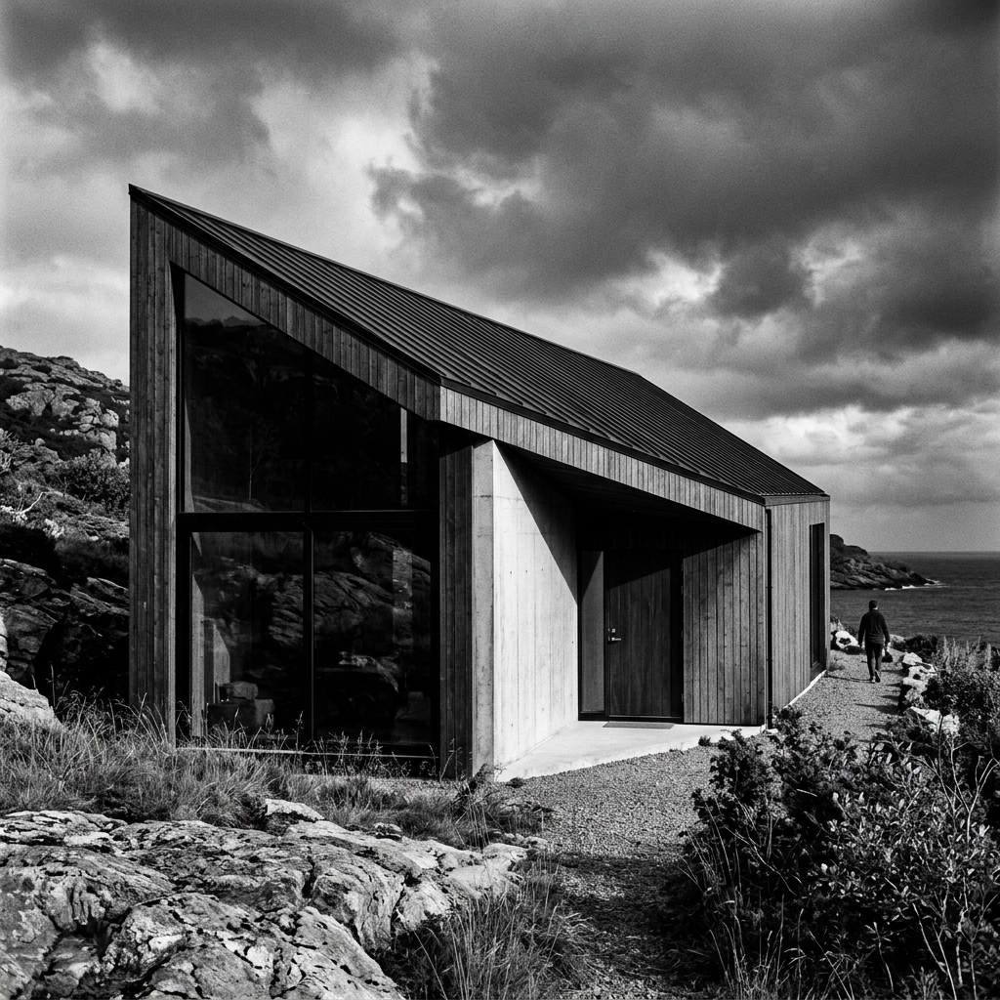

L'architecture contemporaine cherche constamment à allier esthétisme, durabilité et respect de l'environnement. Parmi les techniques qui reviennent en force, le bois brûlé, ou Shou Sugi Ban, s'impose comme une évidence pour les constructions modernes.
Originaire du Japon, cette méthode ancestrale consiste à carboniser la surface du bois pour le protéger des intempéries, des insectes et même des incendies. Aujourd'hui, elle est adoptée par les architectes du monde entier pour créer des façades noires intenses, mates et texturées.
Une esthétique radicale
Le contraste qu'offre une façade en bois brûlé avec son environnement immédiat est saisissant. En pleine nature, le noir profond se détache avec élégance contre le vert de la végétation ou le gris d'un ciel nuageux. En milieu urbain, il apporte une touche de sophistication brute qui tranche avec le béton et le verre environnants.

La durabilité avant tout
Au-delà de son aspect visuel indéniable, le bois brûlé est un choix extrêmement rationnel. La couche de carbone qui se forme lors de la combustion agit comme une carapace protectrice. Elle rend le bois imputrescible, le protège des UV (qui griseraient un bois classique) et repousse naturellement les insectes xylophages.
Ainsi, contrairement aux bardages en bois traditionnel qui demandent un entretien régulier, une façade en bois brûlé peut traverser les décennies sans aucune intervention majeure, tout en conservant son aspect originel.
← Retour à l'accueil